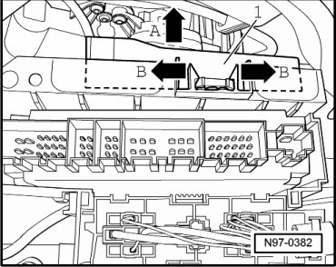
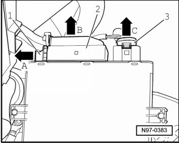
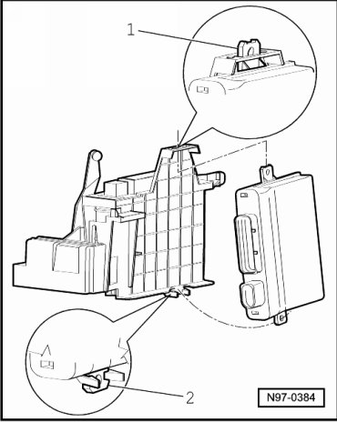

Access/Start Authorization Control Module
Access/Start Authorization
Access/Start Authorization Control Module
Removing
CAUTION!
When disconnecting battery, procedure must always be followed as described in the repair information --> [ Battery, with Auxiliary Battery or Two-Battery Layout, Disconnecting and Connecting ] Battery, with Auxiliary Battery or Two-Battery Layout, Disconnecting and Connecting. Not adhering to sequence will result in the deactivation of Main Battery Switch -E74- and subsequent damage to electrical system components.
- Disconnect battery --> [ Battery, One-Battery Layout, Disconnecting and Connecting ] Battery, One-Battery Layout, Disconnecting and Connecting.
- Remove lower storage compartment on driver side.
- Push locking hooks of bracket outward - arrows B - and pull Access/Start Authorization Control Module (J518) - 1 - behind bracket forward - arrow A -.

- Release - arrow A - locking mechanism - 1 - of multi-pin harness connector - 2 -.

- Disconnect - arrow B - multi-pin harness connector - 2 - from Access/Start Authorization Control Module (J518).
- Disengage multi-pin harness connector - 3 - and disconnect it from Access/Start Authorization Control Module (J518) - arrow C -.
- Remove Access/Start Authorization Control Module (J518) from bracket.
Installing
Install in reverse order of removal, noting the following:
- The strap - 1 - for Access/Start Authorization Control Module (J518) must first be inserted into guide at top.
- Next, strap - 2 - is clipped into bracket.

• If Access/Start Authorization Control Module (J518) is replaced, work sequence --> [ Access/Start Authorization Control Module, Coding ] Access/Start Authorization must be performed.